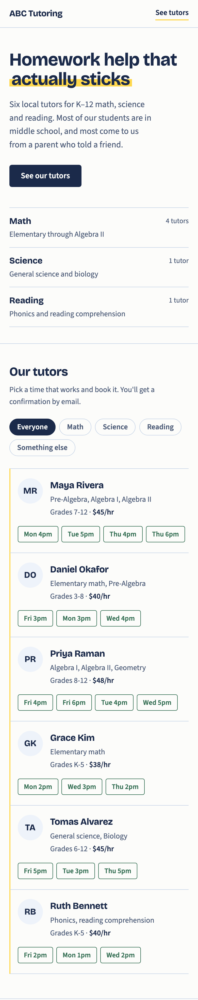

ABC Tutoring · prototype walkthrough
You said it all runs through your phone now and it's getting to be a lot. So the site does two jobs: let parents book a tutor without calling you, and quietly tell you each week what's working.
Built for a phone first, because that's how nearly everyone reaches you.

Each one is now measured. Turning it into your weekly email is the last step.
Which tutors do people look at most?
Every tutor a parent scrolls to is counted, and set against how often they're actually booked.
Do they book, or just leave?
The whole path is tracked, including which form field someone was on when they gave up.
Which subjects are people looking for?
Including subjects you don't teach — a parent who finds nothing can say what they wanted.
Is the local Facebook group working?
Every visit records where it came from, so each source can be judged on bookings, not clicks.
Where visitors go, over one week
Those visits produced 291 looks at a tutor — most parents compare two or three before choosing.
Run on simulated visitors, to show the kind of answer you'll get.
Bookings per 100 visits, by where people came from
The Facebook group is working. It sent the most people of any source and nearly half your bookings. Instagram sent 33 people and produced one booking.
Bookings per 100 views, by tutor
The most-looked-at tutor isn't the most booked. Maya was viewed most often, but Daniel turned a smaller audience into more sessions.
You said you're not very technical and you work from your phone. So you don't have to log into anything.
Everything on the last two pages is already being recorded. What isn't built yet is the Monday email that puts it in front of you.
That's a short job, and it's next. Until then the same figures are there to look at whenever you want them.
Your visitors are parents and kids, so the site counts what happened, never who.
No names, email addresses or phone numbers ever leave the booking form. No screen recording. Nothing follows a person between visits.
Booking details stay with you.
Bookings are saved in the visitor's own browser, not a shared calendar — so two parents could still claim the same time.
The confirmation email isn't really sent yet.
Both need a proper booking system behind the site. That's the next piece of work, and worth doing before you share the link.
Photos of the six tutors, and their real weekly availability. Then tell me whether you want to approve a booking before it's confirmed, or let the time be taken straight away — right now it's taken straight away, which is simpler for the parent but gives you no say. It's live at geniushouse.github.io so you can try it on your own phone; I'd hold off posting it to the group until a real booking system is behind it.